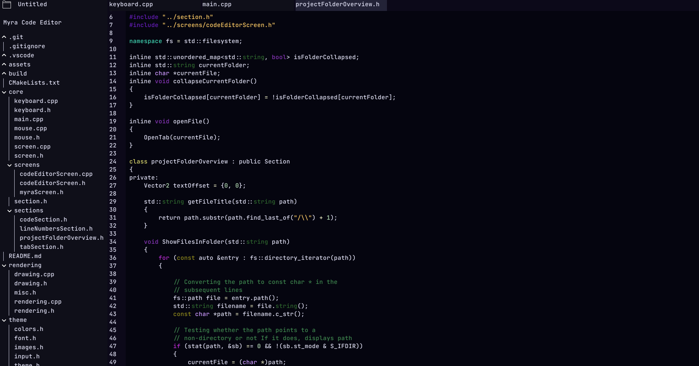
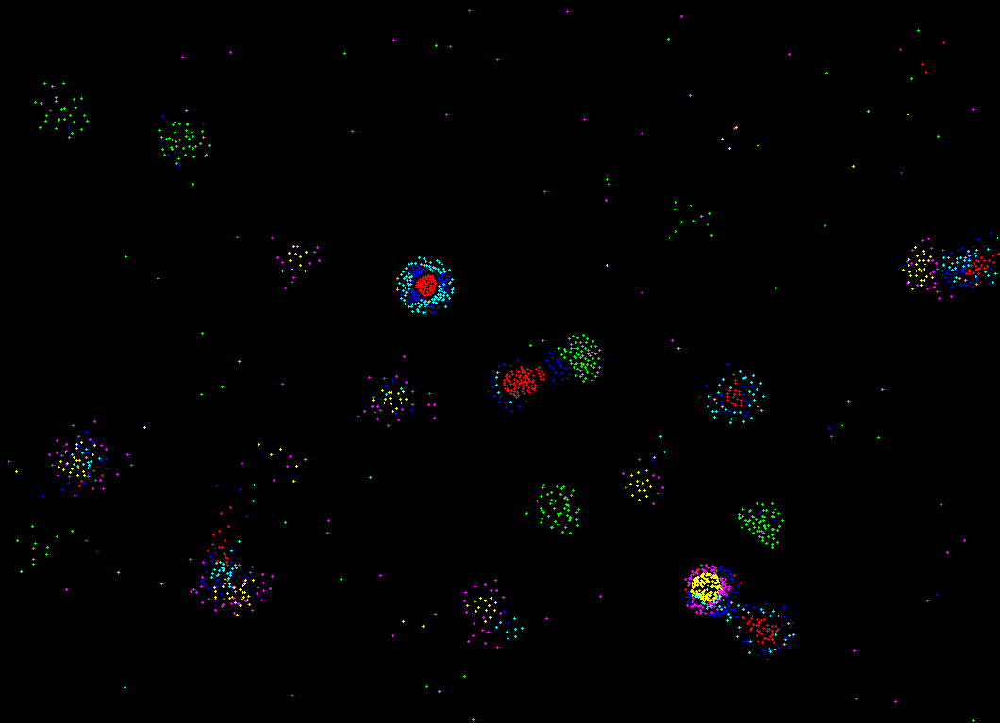
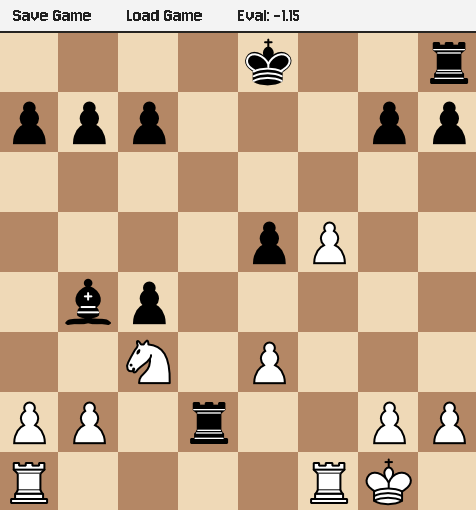
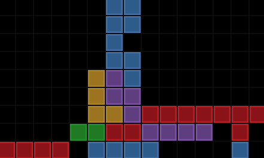

A performant, highly customizable, and unique code editor
Source code for the (soon to be) klydev.com website, a simple site written with no UI framework
1
2
3
4
5
6
7
8
9
10
11
12
13
14
15
16
17
18
19
20
21
22
23
24
25
26
27
28
29
30
31
32
33
34
35
36
37
38
39
40
41
42
43
44
45
46
47
48
49
50
51
52
53
54
55
56
57
58
59
60
# About Me
Hey there! I'm klydev, and I really, really, like staring at a
computer and
talking to it in a cryptic language to make it do
stuff!
I like coding interesting ideas and tools that might help developers
in the future,
even if I have more unfinished projects than I can count :p.
(hey, at least each one taught me something!)
## What I Do
My current passion is working with SDL3 in C++ to create small apps
or libraries and frameworks (possibly even game engines!) on top of
SDL.
Other than that, I like experimenting and learning something new
for a couple of weeks at a time. For example, I went on a wild
rollercoaster ride in the exciting world of Machine Learning
with Python and PyTorch.
## Tech I Use
- C++
- Python
- Git & GitHub
- HTML & CSS & JS
## Currently
At the time of writing this, I'm working on the
Myra Code Editor.
## Get In Touch
My discord username is imklydev; I'd love to get in touch with
anyone! :)
A code editor made in C++ and SDL3 for rendering.

A particle life simulation made in C++.

A rule-based chess engine made in C++

Tetris. Fun little day project.

A particle life simulation made in C++.
A rule-based chess engine made in C++
Tetris. Fun little day project.